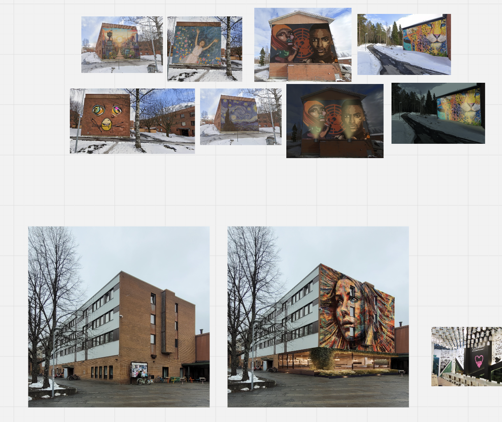
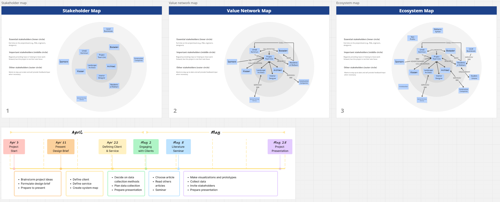
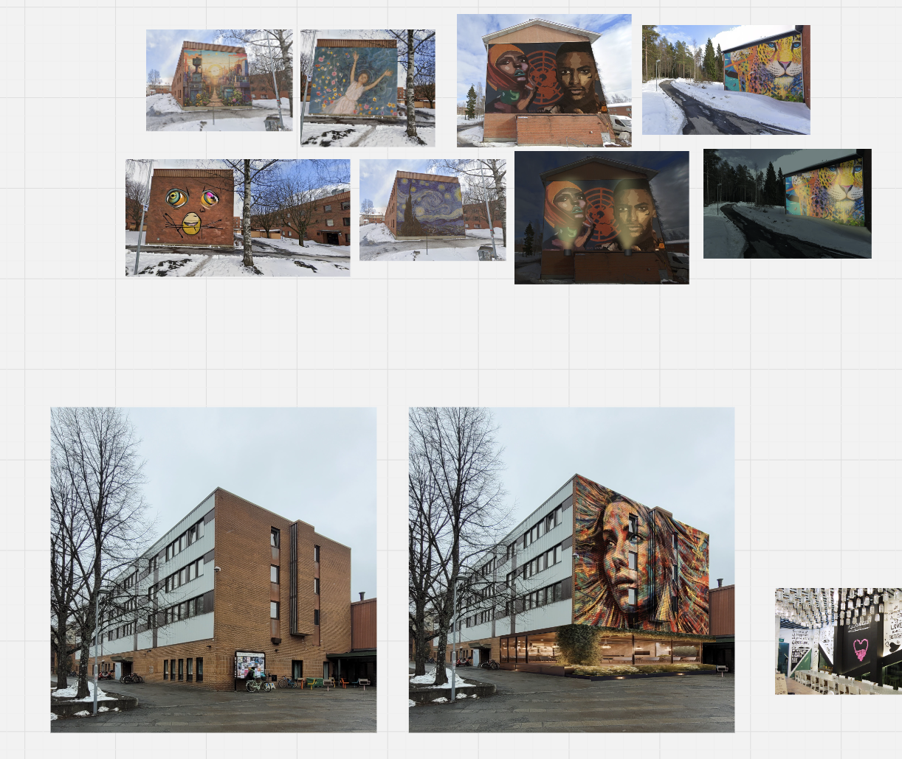
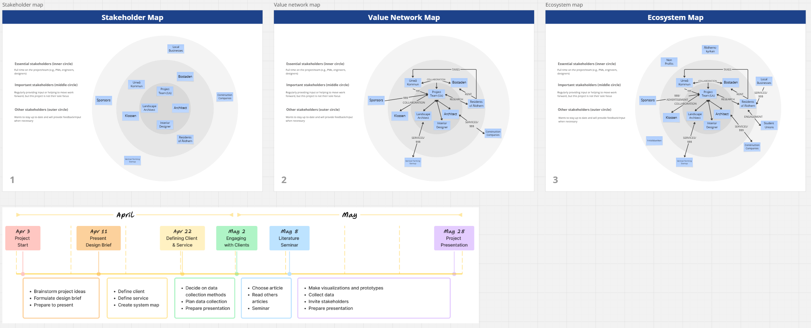

Illuminate Ålidhem
UX-research, UX-design, Urban design
This project involved collaborating with Umeå Kommun and local stakeholders to explore how the overall feel and experience of the public urban spaces in Ålidhem, a residential district in Umeå, could be improved, especially during the long, grey winters. By using city wide user research, interviews with local stakeholders, as well as a co-design session with an urban planner/architect we aimed to create a more inviting, engaging, and lively environment that both meets community needs and encourages social interaction. The results proposed a number of different ways to improve the residential district, through elements such as lighting, wall art, and activity centers.
Role
UX-Researcher & Designer
Team
Collaborative project with 3 other students in the same role
Tools & Methods
Miro, MAXQDA, Data Analysis, Co-design, Observation, Interviews, Ideation
Time Spent
2024, 2 months, Part-time 75%
Ålidhem during the winter.
 



Project Documents.
Problem & Context
Ålidhem, a residential district in Umeå, like many other places in Sweden, has to face the challenges of the dark, long winters that negatively impact the atmosphere, social interaction, and overall experience in it's public spaces. In collaboration with Umeå Kommun and local stakeholders, this project explored how environmental and service design could address these seasonal issues and improve the quality of life for residents. By utilizing insights from city-wide user research in the form of 300 responses from Umeå Municipality's City District Dialogue, we aimed to make Ålidhem a more inviting, engaging, and active place during the winter.
Design Process
We used a human-centered design process involving local stakeholders in the discussions through interviews. Among these were people from the local cultural center "Klossen" as well as a music teacher at the local school. On top of this, initial field research was done which included photo walks and site analysis to better understand the physical and emotional experience of Ålidhem. We conducted qualitative coding of the resident feedbacks from Umeå Municipality's City District Dialogue using MAXQDA, identifying themes such as lack of lighting, green spaces and activites, as well as a general sense of unsafety. Brainstorming sessions helped us translate these findings into actionable ideas, and we collaborated with an urban planner in a co-design session to refine our concept.
Key Features
Our final proposal focused on three main interventions:
- Social Hubs: Indoor activity centers like the “Månsken” hub, offering cafés, lounges, and space for studying and events. Residents would be invited to co-organize activities, promoting more community involvement.
- Street Art with Lighting: Murals selected through contests and community voting, paired with interactive or ambient lighting to improve the aesthetics and visibility during winter.
- Improved General Lighting: Aesthetic, safety-promoting lights installed along major walkways such as Naturvetarstråket and Humaniststråket, targeting areas people considered to be especially unpleasant or unsafe.
These interventions were designed to be both adaptable and low-cost, as well as to promote more community involvement.
Impacts & Insights
While the project was conceptual, it was grounded in rich qualitative data and community dialogue. The proposed designs addressed a big part of the resident feedback. Among these, improved safety, greater access to social activities, and a more positive neighborhood atmosphere. The co-design approach ensured that the interventions were both realistic in terms of costs, as well as grounded in what the community actually would appreciate.